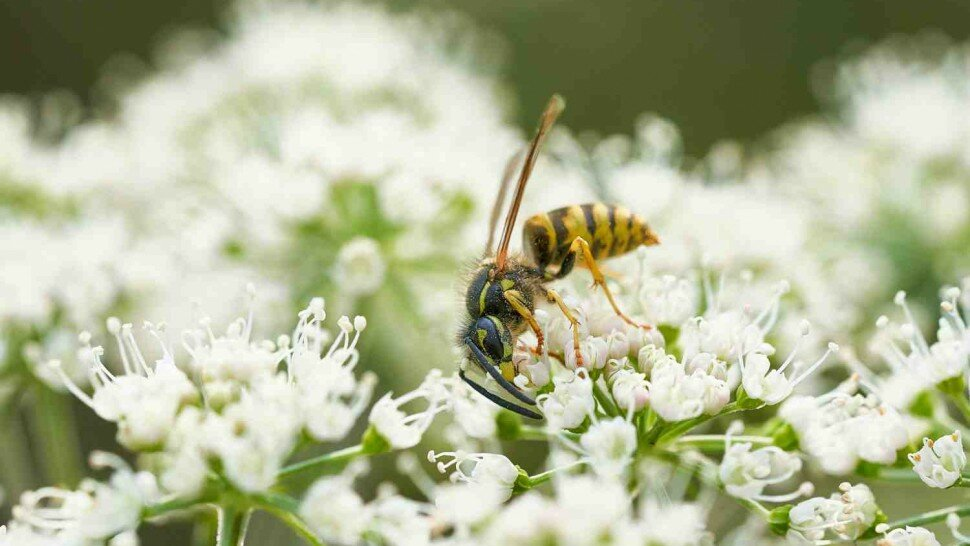
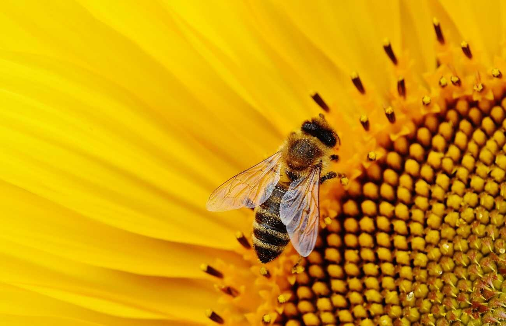
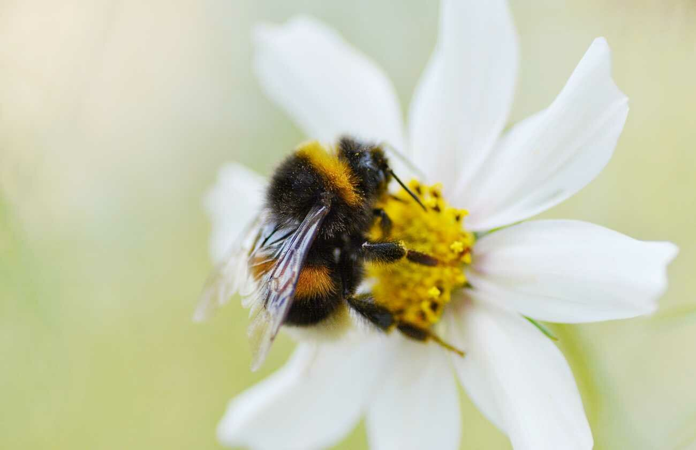
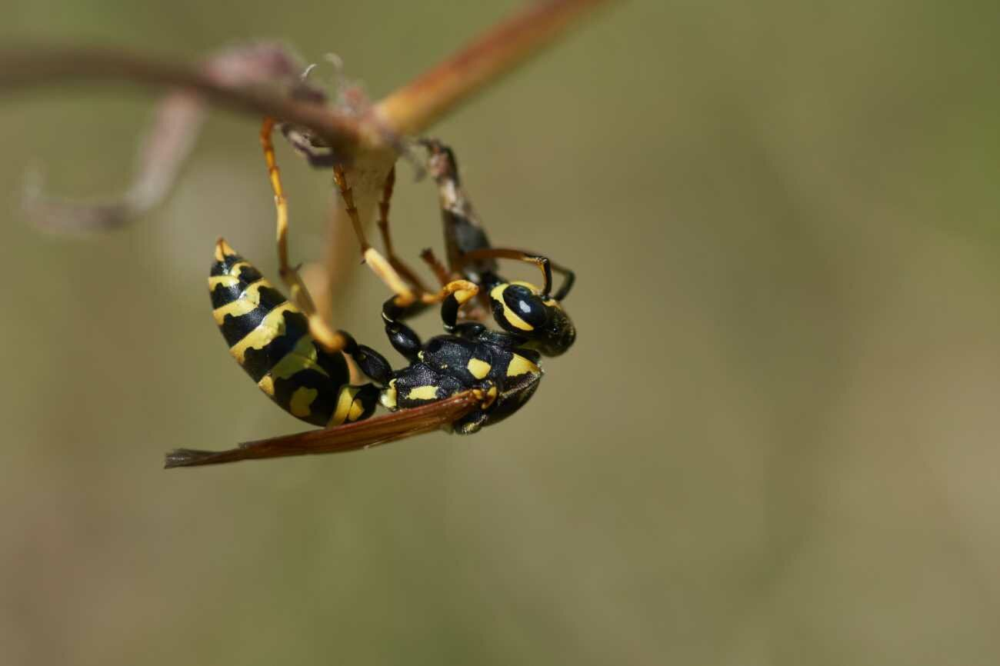
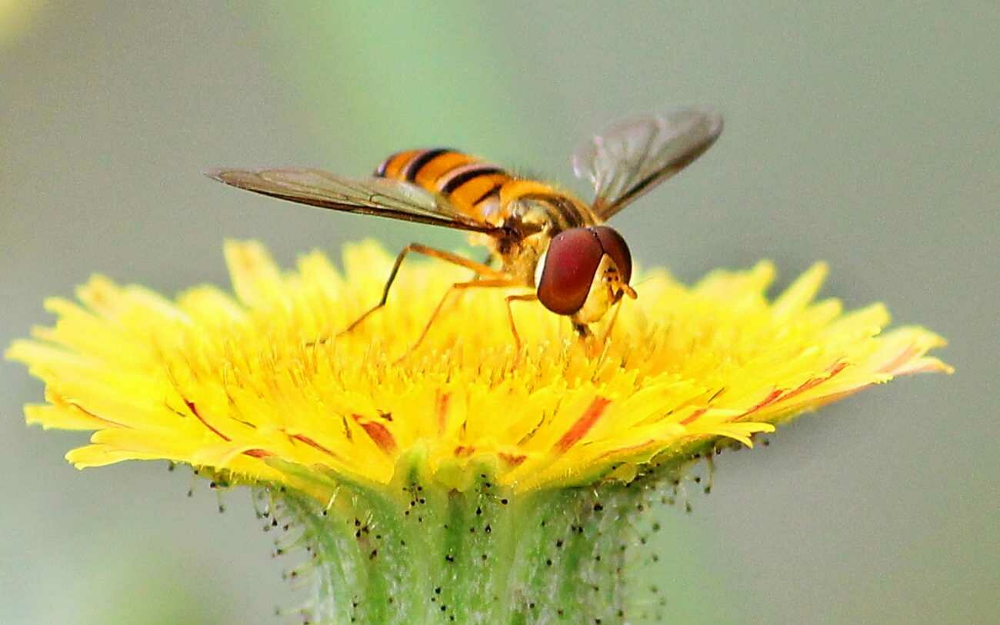

Piqûre de guêpe ou d’abeille : que faire ?

Les piqûres de guêpes sont courantes dès les beaux jours, surtout pendant les mois les plus chauds lorsque les gens sont en extérieur pendant de longues périodes. Ces piqûres peuvent être inconfortables. Toutefois, bien que la plupart des gens se rétablissent rapidement et sans complications, il est primordial « de reconnaître les situations nécessitant une hospitalisation urgente. Dans les autres cas, des gestes simples permettent de soulager la réaction locale autour de la piqûre ». [1]
Les guêpes, comme les abeilles et les frelons, sont équipées d'un aiguillon à barbelures pour se défendre. L'aiguillon, ou dard. de la guêpe contient du venin (une substance toxique) qui est transmis à l'homme lors d'une piqûre. Cependant, même sans dard logé, le venin de guêpe peut causer une douleur et une irritation importantes. De plus, il est également possible d'avoir une réaction grave et sévère (choc anaphylactique) si une personne est allergique au venin. Dans les deux cas, un traitement rapide est important pour soulager les symptômes et éviter les complications.
En l’absence de tout signe de réaction allergique généralisée, il peut être possible de traiter la réaction locale à domicile. Premièrement, il faut retirer le dard (aiguillon) rapidement en utilisant un objet à bord non tranchant (en privilégiant par exemple une carte bancaire ou un couteau à beurre, mais en évitant une pince à épiler), afin d’arrêter rapidement le flux de toxines. Ensuite, il faut appliquer une compresse (pièce de gaze) d’eau froide pour soulager la douleur. Il peut être conseillé une prise orale d'un antihistaminique ou l'application d'une crème ou d'un gel (antihistaminique, hydrocortisone) pour apaiser les démangeaisons et le gonflement. Notons que selon la zone de la piqûre, il est recommandé de surélever l'endroit piqué afin de réduire le gonflement.
Enfin, si une personne présente un ou plusieurs symptômes tels que, une urticaire généralisée, un gonflement des lèvres et de la langue, une sensation de malaise, des étourdissements, des difficultés à respirer ou une respiration sifflante, elle doit être prise en charge sans délai dans le service des urgences le plus proche.

Sommaire
- Abeille, guêpe, frelon, bourdon : comment les différencier ?
- Comment réagir face aux piqûres d'insectes ?
- Est-ce qu'une piqûre d'abeille ou de guêpe est dangereuse ?
- Que faire en cas de piqûre d'abeille, de guêpe ou de frelon ? - Vidéo
- Piqûres d’abeille et de guêpe : symptômes, gonflement, démangeaison, allergie…
- Les piqûres de guêpes peuvent être mortelles - Vidéo
- Symptômes et prise en charge d'une piqûre de guêpe
- Recommandations générales : premiers gestes et solutions
- Sources
Abeille, guêpe, frelon, bourdon : comment les différencier ?

Que faire quand on se fait piquer ? Quoi mettre sur une piqure de guêpe, d'abeille,... ?
L’abeille, le bourdon, la guêpe, et le frelon sont souvent confondus pour le non initié. Cependant, avec un regard un peu plus aiguisé, il est assez facile de les différencier. Ceci permet d’anticiper les éventuelles piqûres et de ne pas gâcher les beaux jours de vacances avec les symptômes qui en découlent (réaction allergique, gonflement, œdème de Quincke [2], perte de connaissance, maux de tête, difficultés respiratoires, etc.).

L'abeille
L’abeille a un corps trapu et enveloppé de poils sur sa partie supérieure. Sur son abdomen, l’abeille porte des bandes noires qui peuvent être de couleur jaune à brun foncé selon l’espèce (Apis mellifera, Xylocopes, Apis cerana, Apis dorsata,…). Notons qu’il existe environ 20 000 espèces dans le monde, dont environ 1000 espèces en France. La plus courante, l’abeille européenne (appelée aussi « avette », « mouche à miel », ou « Apis mellifera »), mesure entre 10 à 15 mm (sauf pour la reine qui mesure entre 10 à 20 mm). Généralement, l’abeille n’est pas un insecte agressif sauf si on s’approche trop près d’un essaim d'abeilles ou d’une ruche. Dans ce cas, si elle se sent en danger, elle peut piquer avec son dard en forme de harpon afin de protéger ses congénères et leur précieux miel. Après une éventuelle piqûre, l’abeille meurt, car le dard de l’abeille n’étant pas un dard lisse, il reste dans la peau, et devra être extrait.

Le bourdon
Le bourdon (Bombus hortorum, Bombus terrestres, …), qui est aussi un insecte pollinisateur très précieux, est de la même famille et ressemble à l’abeille à miel (Api mellifera). Le corps du bourdon est trapu et duveteux. Cependant, le bourdon est de plus grandes tailles (environ de 15 à 22 mm). Le bourdon possède une bande jaune ou jaune pâle sur le thorax et sur le haut de l’abdomen sur un fond noir et l’extrémité de son corps est blanche. À l'opposé du son discret de l’abeille, le vol du bourdon est bruyant, ce qui facilite son identification.

La guêpe
La guêpe, tout comme l’abeille et le bourdon, appartient à l'ordre des hyménoptères (Hymenoptera). Cet insecte, plutôt fin (d’où l’expression « taille de guêpe »), peut mesurer entre 10 et 18 mm. Dépourvue de poils sur son corps, la guêpe est de couleur jaune vive rayée de bandes d’un noir très soutenu. La guêpe se caractérise aussi par la forme de corps, puisqu’il subsiste une séparation très distincte et étroite entre son abdomen fuselé et son thorax.

Le frelon
Le frelon (appelé aussi « talènes », « guichards », « cabridans », « lombardes ») est un genre d'insecte de l’ordre des hyménoptères (Hymenoptera) et de la super-famille des Vespidae. Insecte essentiellement originaire d’Asie, mais présent en Europe, le frelon est de la famille des guêpes. Cependant, le frelon est beaucoup plus grand et peut mesurer jusqu’à 35 mm. Le frelon européen, ou Vespa crabro, qui est le plus commun en France, mesure en général entre 18 et 24 mm. Le corps du frelon ressemble beaucoup à celui de la guêpe, bien qu’il soit légèrement velu et de couleur orangée au niveau de la tête. Le vol du frelon est plutôt bruyant, ce qui permet de le repérer pour évite une piqûre de frelon. Cet insecte n’est habituellement pas très agressif, sauf pour le frelon asiatique (Vespa velutina). La piqûre de frelon asiatique ne serait pas plus dangereuse pour l’homme, mais sa douleur beaucoup plus intense.
Est-ce qu’une abeille, un bourdon, une guêpe ou un frelon peut piquer ?
Oui, l’abeille, le bourdon, la guêpe et le frelon, sont des insectes qui peuvent piquer. Toutefois, les piqûres d’hyménoptères, qui s'accompagnent toutes d'une réaction locale érythémateuse [3] et douloureuse au point d'inoculation du venin, peuvent varier d’intensité et de dangerosité selon les patients, l’endroit de la piqûre et l’espèce. Il est important de souligner que seules les femelles (abeille, bourdon, guêpe, frelon) piquent.
Est-ce qu'une piqûre d'abeille ou de guêpe est dangereuse ?
Piqûres d’abeille et de guêpe : symptômes, gonflement, démangeaison, allergie…
Symptômes et prise en charge d'une piqûre de guêpe

La majorité des personnes sans allergies aux piqûres ne présenteront que des symptômes mineurs pendant et après une piqûre de guêpe.
Les sensations originelles peuvent inclure une douleur aiguë ou une brûlure au site de la piqûre. Des rougeurs sur la peau, des gonflements (visage, lèvres,…) et des démangeaisons cutanées peuvent également survenir.
Réactions locales normales suite à une piqûre de guêpe
Une personne est susceptible de développer une bande surélevée et boursoufflée autour du site de la piqûre. Une petite marque blanche peut être visible au milieu de la trépointe où le dard de la guêpe a perforé la peau. Communément, la douleur et l'enflure disparaissent dans les heures qui suivent la piqûre de guêpe.
Réactions d'hypersensibilité locales après des piqûres d’insectes
Les personnes qui ont des réactions locales importantes peuvent être allergiques aux piqûres de guêpes, mais elles ne présentent pas de symptômes potentiellement mortels, tels qu'un choc anaphylactique.
Les réactions locales importantes aux piqûres de guêpes comprennent une rougeur extrême et un gonflement qui augmente pendant deux ou trois jours après la piqûre (gonflement spectaculaire du visage, gonflement de la lèvre…). Toutefois, des nausées et des vomissements peuvent également survenir. La plupart du temps, les réactions locales importantes sont des manifestations cliniques qui s'atténuent d'elles-mêmes en l'espace d'une semaine environ.
Dans le cas d’une piqûre de guêpe (et de piqûres multiples) et d’une réaction locale importante, il est recommandé de consulter le médecin traitant ou de se rendre dans un centre hospitalier [6]. Les professionnels de la santé (médecin allergologue,…) pourront selon les cas prescrire un médicament antihistaminique en vente libre et proposer une cure de désensibilisation selon les cas.
A l’occasion d’une grande réaction locale après une piqûre de guêpe une fois ne signifie pas nécessairement qu’une personne réagit aux futures piqûres de la même manière. Il est possible d’avoir une réaction violente et de ne plus jamais présenter les mêmes symptômes.
Photo d'une piqûre de guêpe

Anaphylaxie suite à une piqûre de guêpe
Les réactions allergiques les plus graves aux piqûres de guêpes sont appelées « anaphylaxie » [7]. L'anaphylaxie se produit lorsque le corps entre en état de choc en réponse au venin de guêpe. La plupart des personnes en état de choc après une piqûre de guêpe le font très rapidement. Il est important de rechercher des soins d'urgence immédiats pour traiter l’anaphylaxie (adrénaline injectable,…).
Les symptômes d'une réaction allergique grave aux piqûres de guêpes comprennent :
- gonflement sévère du visage, des lèvres ou de la gorge ;
- urticaire ou démangeaisons dans les zones du corps non affectées par la piqûre ;
- difficultés respiratoires, telles que respiration sifflante ou halètement ;
- vertiges ;
- chute soudaine de la pression artérielle ;
- étourdissements ;
- mouvements désordonnés ;
- perte de connaissance ;
- nausées ou vomissements ;
- diarrhée ;
- crampes d’estomac ;
- pouls faible ou rapide.
Le choc anaphylactique est une urgence médicale qui nécessite une prise en charge et un traitement immédiat.
Que faire et comment faire en cas de piqûre de guêpe ?
Réactions légères à modérées
Il est possible de traiter les réactions légères et modérées aux piqûres de guêpes à la maison. Dans ce cas, plusieurs recommandations et médicaments en vente libre sont possibles :
- laver la zone de la piqûre avec de l'eau et du savon pour éliminer le plus de venin possible ;
- appliquer une compresse froide sur le site de la plaie pour réduire l'enflure et la douleur ;
- garder la plaie propre et sèche pour éviter l’infection ;
- couvrir d'un pansement si désiré ;
- utiliser une crème apaisante à l'hydrocortisone (hormone cortisol lorsqu'elle est fournie comme médicament) ou une lotion à la calamine (constituée d'oxyde de zinc et d'oxyde de fer) si les démangeaisons ou l'irritation de la peau deviennent gênantes. Le bicarbonate de soude et l'avoine colloïdale sont apaisants pour la peau. Ces composés peuvent être utilisés pendant un bain ou à travers des crèmes calmantes médicamenteuses pour la peau ;
- utiliser des analgésiques en vente libre, tels que l'ibuprofène, qui peuvent gérer la douleur associée aux piqûres de guêpes ;
- recourir à des antihistaminiques, y compris la diphenhydramine et la chlorphéniramine, qui peuvent également réduire les démangeaisons, prendre des corticoïdes par voie orale.
Il peut être également recommandé d’envisager de se faire vacciner contre le tétanos quelques jours après la piqûre si un patient n’a pas reçu de vaccin de rappel au cours des 10 dernières années.
Comment faire dégonfler une piqûre de guêpe avec du vinaigre ?
Le vinaigre est un autre remède maison possible qui peut être utilisé pour les piqûres de guêpes. Cette recommandation est basée sur le fait que l'acidité du vinaigre peut aider à neutraliser l'alcalinité des piqûres de guêpes. Pour utiliser du vinaigre sur les piqûres de guêpes, il est nécessaire d’imbiber une boule de coton de vinaigre de cidre de pomme ou de vinaigre blanc et de la placer sur la zone de peau affectée. Il faut procéder à une légère pression avec le coton imbibé pour soulager la douleur et l’inflammation pendant plusieurs minutes.
Piqûre de guêpe : quand faut-il s'inquiéter et consulter ?
Réactions sévères et infection suite à une piqûre de guêpe
Les réactions allergiques graves aux piqûres de guêpes nécessitent des soins médicaux immédiats en contactant un médecin ou en se rendant dans un centre hospitalier afin que la prise en charge soit optimale. De plus, parfois, une piqûre peut s'infecter. Le premier geste est de consulter un médecin (médecin allergologue,…) si la zone touchée présente un écoulement de pus ou s'il y a une augmentation de la douleur, de l'enflure et de la rougeur normales qui ont été produites par la piqûre initiale.
Piqûre de guêpe et femme enceinte
Les piqûres de guêpes peuvent survenir à n'importe quel stade de la vie, y compris pendant la grossesse. À moins qu’une personne ait une allergie connue au venin ou avec des antécédents allergiques, les piqûres de guêpes ne sont généralement pas un problème, mais une consultation auprès d’un professionnel de la santé est de rigueur (ne pas hésiter à demander les conseils du centre antipoison le plus proche).
Vous pouvez suivre les mêmes mesures de traitement qu'une personne qui n'est pas enceinte, mais évitez les antihistaminiques contenant des ingrédients décongestionnants.
Cas de piqûres de guêpe chez les enfants
Alors que les morsures (morsure d’araignée [8],…) et les piqûres d'insectes sont souvent considérées comme un rite de passage pendant l'enfance, cela ne les rend pas moins dangereuses et inconfortables.
Les enfants sont des personnes à risques et sont particulièrement vulnérables, car ils peuvent ne pas être en mesure de verbaliser pleinement qu'ils ont été piqués par une guêpe. Lorsqu’un enfant joue à l'extérieur, il faut être à l'affût des signes d'une piqûre de guêpe et rechercher immédiatement la source des éventuelles larmes et plaintes pour éviter des complications (piqûre dans la bouche,…). Ensuite, il est préférable d’enseigner aux enfants comment ils peuvent prévenir les piqûres de guêpes et comment réagir dans ce cas.
Recommandations générales : premiers gestes et solutions
Sources
- Piqûres de guêpes, abeilles, frelons et bourdons. https://www.ameli.fr/
- Œdème de Quincke. Manuel MSD. https://www.msdmanuals.com/
- Item 314 – Exanthème. Annales de Dermatologie et de Vénéréologie. Volume 139, Issue 11, Supplement, October 2012, Pages A213-A218. http://document.cedef.org/
- Venom allergy. BMJ 1998; 316 doi: https://doi.org/10.1136/bmj.316.7141.1365 (Published 02 May 1998). BMJ 1998;316:1365. https://www.bmj.com/content/316/7141/1365
- Désensibilisation : vers de nouvelles perspectives. https://www.revmed.ch/
- Le guide des hôpitaux et cliniques de France. https://www.le-guide-sante.org/le-guide
- Anaphylaxie. La manifestation la plus sévère de l’allergie. Inserm. https://www.inserm.fr/dossier/anaphylaxie/
- Conduite à tenir face à une morsure d'araignée. https://www.le-guide-sante.org/actualites/sante-publique/soigner-traiter-piqure-morsure-araignee
- Trois étapes à suivre immédiatement après une piqûre d’abeille — Commentaire. https://www.msdmanuals.com/